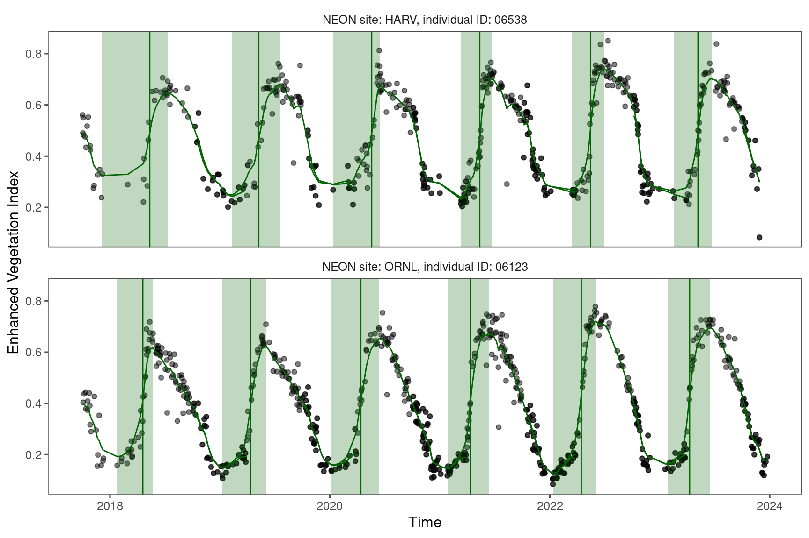
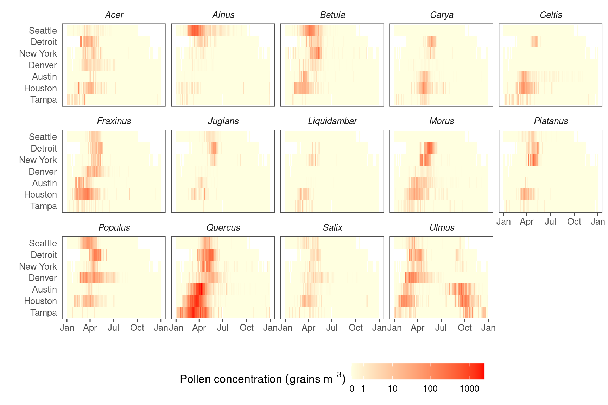
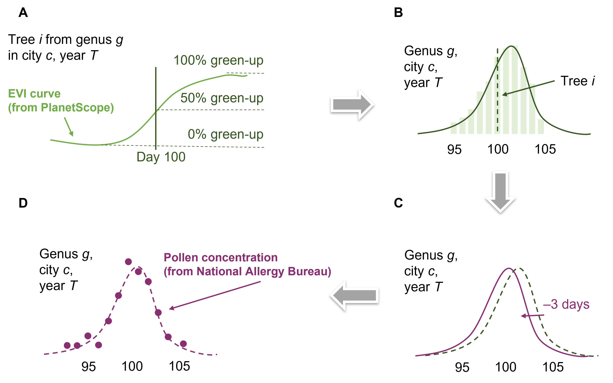
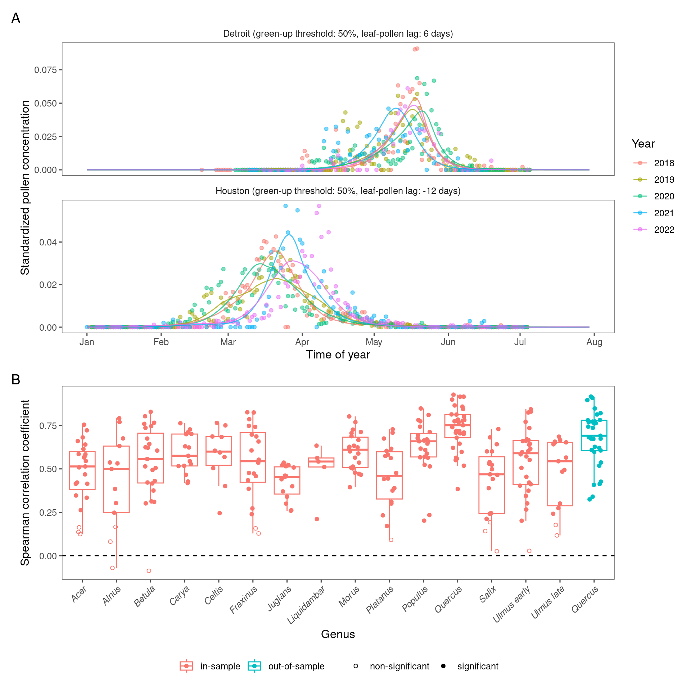
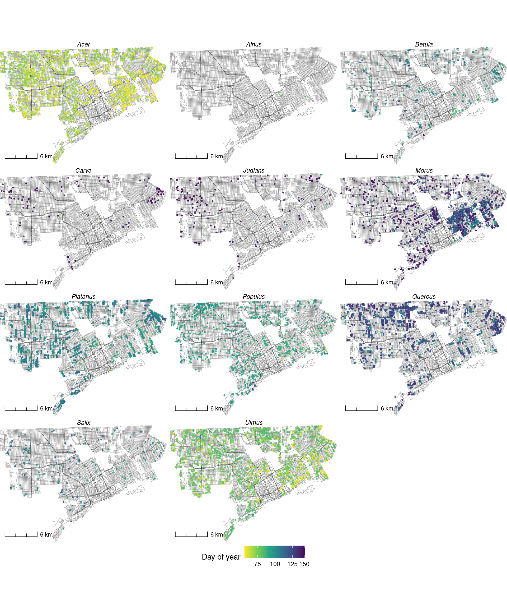

Highlights
- PlanetScope-derived vegetative phenology predicts the time of flowering.
- A novel approach accurately infers city-level pollen phenology.
- Out-of-sample accuracy shows the promise of the method for extrapolation.
- PlanetScope can be used to map pollen phenology widely in US cities with fine details.
Abstract
Airborne pollen triggers allergic reactions, which can have public health consequences. Accurate airborne pollen concentration modeling and prediction rely on understanding plant reproductive phenology, particularly the timing of flowering and pollen release. Flowering and pollen phenology data are often collected through ground observations and air sampling, but such in-situ data collection efforts are expensive and spatially sparse. In contrast to in-situ data collection, satellite-based estimates of plant phenology could potentially enable large-scale data collection, but it is challenging to detect the reproductive phenology of wind-pollinated flowers from space. Here, we infer the reproductive phenology of wind-pollinated plants on the individual tree level and city level using PlanetScope time series with a spatial resolution of 3 m and a daily revisit cycle. We complemented PlanetScope data by in-situ flower and pollen observations at the two scales, leveraging the correlation between vegetative and reproductive phenology. On the individual tree level, we extracted PlanetScope-derived green-up time and validated its correlation to flowering time using flower observations in a national-scale observatory network. Scaling up to the city level, we developed a novel approach to characterize pollen phenology from PlanetScope-derived vegetative phenology, by optimizing two tuning parameters: the threshold of green-up or green-down and the time lag between green-up/down and flowering. We applied this method to seven cities in the US and 14 key wind-pollinated tree genera, calibrated by measurements of airborne pollen concentrations. Our method characterized pollen phenology accurately, not only in-sample (Spearman correlation: 0.751, nRMSE: 13.5% for Quercus spp.) but also out-of-sample (Spearman correlation: 0.691, nRMSE: 14.5% for Quercus spp.). Using the calibrated model, we further mapped the pollen phenology landscape within cities, showing intra-urban heterogeneity. Using high spatiotemporal resolution remote sensing, our novel approach enables us to infer the flowering and pollen phenology of wind-pollinated plant taxa on a large scale and a fine resolution, including areas with limited prior in-situ flower and pollen observations. The use of PlanetScope time series therefore holds promise for developing process-based pollen models and targeted public health strategies to mitigate the impact of allergenic pollen exposure.
Extracting phenological signals from PlanetScope


Predicting individual-level flowering phenology

Predicting city-level pollen phenology



Predicting urban pollen allergy landscape
